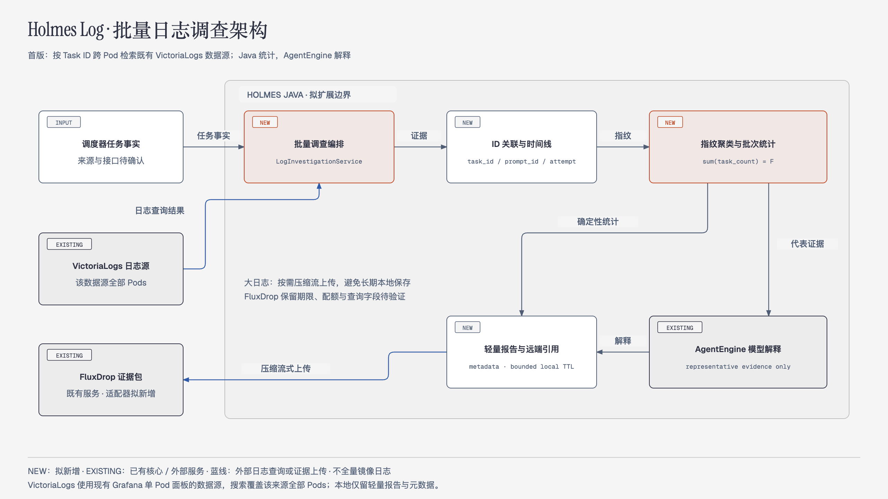
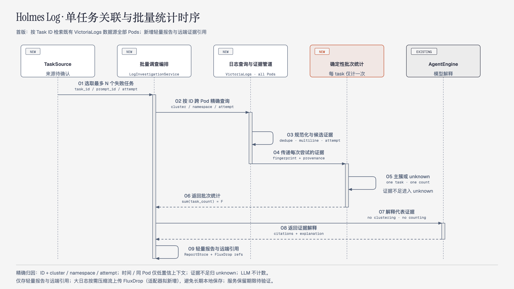

Overview
当前日志分散在多个 Pod 和组件中，排查一次失败任务需要反复切换日志。Holmes Log 要在现有 Holmes Java 代码上增加任务级日志调查能力：输入一批失败任务，关联所有相关组件的日志，找出共同失败模式，并给出可核验的关键证据。
已知业务关联约定为 调度器 task_id = ComfyUI prompt_id。第一版日志来源限定为指定 Grafana 面板背后的 VictoriaLogs 数据源，覆盖该来源已采集、当前账号可读取的所有 Pod。大日志不在 Holmes 本机长期保存；需要归档的日志包使用指定的 FluxDrop。
文档状态：第一版技术方案，2026-10-15。本文区分已核实的现状与拟新增能力；本次完善方案、源码改动清单和验收标准，功能尚未实现。所有接口、类名、预算和 TTL 中标为“拟定”的内容均是开发契约，需在实现和联调时落实。
1. 使用目标与第一版范围
典型操作：选择 prod、时间范围及最近 N 个最终失败任务，或直接提供失败任务 ID；系统返回失败模式排行、每个任务的执行时间线、各组件关键日志、证据缺口，以及下一步排查建议。报告中的每个判断都能回到 evidence_id 和对应日志来源。
| 第一版包含 | 交付行为 |
|---|---|
| 批量失败任务调查 | 支持明确 ID 清单；具备权威任务状态接口后支持最近 N 个失败任务。按唯一任务统计，不按 ERROR 行数统计。 |
| 跨 Pod、跨组件关联 | 先在整个已授权日志范围内搜索业务 ID，再补充命中日志流的执行上下文；不锁定当前页面所选 Pod，也不只查 comfyui 前缀。 |
| 共性聚合和关键日志 | 程序完成规范化、失败签名、归类和计数；模型解释代表证据，给出可能原因、反证和未知项。 |
| 有限存储 | 本机保留轻量报告、检查点和脱敏摘录，配置 TTL 与总容量上限；大日志按需压缩分块上传 FluxDrop。 |
| 暂不包含 | 全量日志镜像、重新部署采集器、长期本地日志库、自动修复、自动重跑任务、跨多个日志平台、实时告警闭环和多实例调度。 |
“所有 Pod”指该数据源在调查时间范围内可查询的全部已授权 Pod，包括保留期内已删除 Pod 的历史日志；不等于所有集群都已接入。默认 namespace=prod，允许选择已授权 namespace。组件是否存在日志、是否参与某任务，必须在报告中分别说明。
2. 已核实的数据来源与接入约束
2.1 Grafana / VictoriaLogs
第一版入口：單一 Pod 日誌（VictoriaLogs）。2026-10-15 通过面板 Query Inspector 只读核实：
| 项目 | 实际值 / 含义 |
|---|---|
| Grafana 查询接口 | POST /api/ds/query；当前请求带 ds_type=victoriametrics-logs-datasource。 |
| 数据源 | type=victoriametrics-logs-datasource，uid=victorialogs，当前 datasourceId=4。程序配置 UID，不依赖易变化的数字 ID。 |
| 当前面板表达式 | _stream: {kubernetes.pod_namespace="prod", kubernetes.pod_name="comfyui-hk-5090-1-2"} | sort desc | limit 100 |
| 响应结构 | Grafana DataFrame，已观察到 Time、Line、labels 字段；按 schema 字段名解析，不固定 values 的位置。 |
| 日志形态 | 文本中包含 Scheduler Monitor 的 event、task_id、data.original_data.prompt_id、instance_id、node_id 等；存在 Python 字典表示法及无任务 ID 的普通日志。示例只证明字段存在，不证明所有组件都已结构化。 |
拟定接入：新增 GrafanaVictoriaLogsSource，使用独立配置的只读服务凭据调用现有 Grafana 查询接口，复用 victorialogs 数据源。鉴权方式、网络连通性和插件隐式返回上限需联调；不从自动化浏览器复制会话 Cookie。若以后直连 VictoriaLogs，可在同一个 LogSource 接口后增加适配器，不能把 Grafana URL 当作 VictoriaLogs 后端地址。
查询去掉固定 kubernetes.pod_name 条件，保留授权 namespace、数据源及时间边界，并加入 task_id / prompt_id 条件。已有结构化字段优先精确匹配；只有文本 ID 时，先检索候选记录，再解析字段做完整 ID 校验。面板的最近 30 分钟、100 条、maxLines=1000 是显示配置，不是调查完整性保证。
示意 LogsQL（TASK_ID 由查询构造器转义，不接收任意表达式）：
_stream: {kubernetes.pod_namespace="prod"} "TASK_ID"
结构化字段确实存在时优先使用：
_stream: {kubernetes.pod_namespace="prod"}
AND (task_id:="TASK_ID" OR prompt_id:="TASK_ID")
时间范围由请求明确传入；排序、条数与分片策略由适配器控制。
无 ID 的上下文另按命中 Pod / container / restart 与短时间窗补取。VictoriaLogs 原生查询接口为 /select/logsql/query，返回 JSON Lines；时间区间 end 为开区间。原生 limit 参数倾向最近记录，不能把一次达到 limit 的响应当作完整结果。具体语法和限制见 官方查询说明、LogsQL 精确匹配。这些是后端参考，Grafana 插件的实际分页行为仍需单独验收。
2.2 失败任务的权威来源
日志平台回答“发生了什么”，调度器任务记录回答“哪些任务最终失败”。新增 TaskSource，从调度器只读 API 或明确的任务状态导出获取 task_id、状态、执行起止、重试记录及目标实例。当前尚未确认任务列表接口和实际状态枚举，不能虚构数据库表或现成接口。
最小可运行入口为显式任务清单 + 含失败状态与 attempt 的导出快照；接入调度器后才开放 latest_failed。若只有日志中的 execution_error 等事件，只能称“错误候选任务”，不能冒充已验证的最终失败任务集合。executed、node_finished 或单行 ERROR 都不能独立决定任务最终状态。
2.3 FluxDrop 归档来源
用户指定 FluxDrop 保存需要归档的大日志。已核实首页展示单文件 PUT、multipart POST、目录 tar.gz 流式上传，以及下载链接和 Hot / Cold 管理入口；本次没有上传真实日志。上传成功响应结构、程序鉴权、下载校验、大小配额、删除 API、保留期限及 Cold 行为尚未确认，不承诺无限容量或永久保存。
3. 当前源码基线与复用边界
代码基线为 allenflux/holmesJpt @ 2f5b88f，Java 27。现有核心可复用，但不是已经具备任务日志分析平台。
| 现有模块 | 已实现 | 本需求需补充 |
|---|---|---|
| HttpApi | 本机 GET /health；同步 POST /api/investigate，仅 question；4 个调查并发、64 KiB 请求体。 | 结构化批量入口、异步 batch_id、进度和结果查询。 |
| AgentEngine | 工具取证、多轮模型解释、上下文和工具预算；每次调查独立内存历史。 | 批次证据上下文与专用只读工具；模型只解释程序产出的统计。 |
| ToolRegistry | list_files、read_file、search_files 和固定 argv 命令。 | 原生数据源适配器、限定批次的证据读取工具。 |
| Kubernetes 工具示例 | kubectl logs 指定容器最近 200 行；需要管理员启用。 | 不能替代集中日志历史查询，也不能保证跨 Pod 完整性。 |
| trace / 文件证据 | 返回本次工具输出；可读取事先导出的本地文件。 | 当前没有 Evidence Store、evidence_id、任务索引或持久化批次。 |
当前默认预算为 8 轮、24 次工具执行、每次工具输出 12,000 字符、上下文 120,000 字符（AppConfig）。不应让模型逐任务、逐 Pod 遍历大日志；采集、关联、聚类和计数必须在 Java 层先完成。
4. 总体架构与处理分工
核心决策：集中日志平台负责历史日志；Java 负责选样、查询、解析、关联、指纹、计数及资源控制；AgentEngine 负责基于有限证据解释；轻量报告保留可核验摘录，FluxDrop 负责按需归档的大日志包。
图 1：Holmes Log 系统架构。EXISTING 表示当前已有；NEW 表示拟新增；日志覆盖以既有数据源实际采集范围为准。

- 固定批次请求和最终失败任务清单，保存 selection_observed_at 与任务状态版本。
- 在授权范围内跨 Pod 搜索每个任务 ID，解析执行事件，定位 attempt、实例、节点及相关组件。
- 补取命中日志流的短窗口上下文，处理多行异常、重复采集和截断，构建每任务时间线。
- 以版本化规则生成失败签名，每任务分配一个主簇；缺失或歧义保留独立类别。
- 产出确定性的统计与 evidence_id，模型只读取代表摘录和必要的补充证据。
- 保存轻量报告；需要原始归档时，将有界分块压缩上传 FluxDrop，保存实际返回的远端引用。
图 2：单任务关联与批次统计时序。时间接近与同 Pod 只提供上下文；模型不计数。

5. 任务选择、关联身份与重试规则
5.1 选样契约
latest_failed：按 failed_at 降序、task_id 作为稳定次序，选指定范围内最近 N 个最终失败且无待执行重试的任务；默认排除取消和最终已成功的任务。显式 ID 模式先去重并验证状态，不存在或不是终态失败的 ID 返回明确校验结果，不静默替换。时间范围内不足 N 个时返回实际数量，绝不扩大范围补齐。
选择时固定任务清单；记录 requested_count、selected_count、selection_observed_at、排序和状态版本。若调度器没有历史快照能力，不声称支持任意 as_of 历史重放。分析期间恢复成功的任务仍保留在原样本与分母中，另标“选中时失败、当前已恢复”。选到 0 个任务时报告无样本，占比为 null。
5.2 复合身份
TaskKey = source_scope + namespace + scheduler_instance + task_id
AttemptKey = TaskKey + attempt_id
LogStreamKey = source_scope + namespace + pod_uid + container + restart
业务约定：scheduler.task_id = ComfyUI.prompt_id
但不能据此假定跨环境唯一、每次重试 ID 唯一，或一个逻辑任务永远只有一个 prompt_id。输入 ID 先在配置 source + namespace 范围中解析为唯一 TaskKey，冲突返回 422；详情链接使用批次内 task_ref，避免复合键被单一 task_id 路由误匹配。source_scope 包含数据源及可用的 cluster / tenant 标识；scheduler_instance 必须是稳定业务标识，不能直接用某个临时 scheduler Pod 名。重试更换 prompt_id 时，以调度器执行记录保存 logical_task_id ↔ attempt_id ↔ prompt_id 映射。缺少 attempt_id 时仅在实例与执行边界能唯一判定时补建推导 attempt，并标注依据；重叠或多义则记 AMBIGUOUS_ATTEMPT。
| 关联等级 | 条件 | 可用于什么 |
|---|---|---|
| 明确关联 | 授权范围内完整 task_id / prompt_id 精确匹配，attempt 明确；或有可核验调用映射。 | 任务证据、失败签名与统计。 |
| 上下文关联 | 同一日志流、执行窗口邻近、相同 instance_id / GPU / node_id，但缺业务 ID。 | 展示候选上下文；不能单独确认为该任务根因。 |
| 冲突 / 未知 | ID 冲突、跨环境同 ID、attempt 重叠、仅字符串片段命中。 | 拒绝错误归属；输出原因与待补证据。 |
只读取终态失败的最后一次 attempt 做主簇统计；早期重试失败作为历史上下文。A 的 attempt 1 超时、最终 attempt 2 OOM，只给 A 的主簇计一次 OOM；不能同时把 A 算成两个失败任务。
6. 日志采集、解析与关键证据提取
- 按任务取证：先查跨 Pod ID 命中事件，再按事件定位组件和日志流。搜索不仅包括 ERROR，还包括提交、开始、节点执行、终态、回调及必要 INFO 上下文，避免丢掉因果链。
- 时间窗：覆盖 attempt 实际开始到终态，并加入拟定前后各 2 分钟的时钟偏差余量；超长任务按区间拆分。只知道 failed_at 时使用明确的回溯上限并标记窗口不完整。保留事件时间、采集时间和时间来源；跨 Pod 排序不能证明因果。
- 读取完整性：查询分片达到条数/字节上限时继续拆小时间片，必要时按 Pod / 日志流拆分；最小时间片仍超限则标 INCOMPLETE。同时间戳大量事件不能用“最后时间戳 + 1ms”跳过。Grafana 结果同时检查 HTTP、每个 refId 的 status / error、字段和隐式限制，无法证明完整时 complete=false。
- 实际格式解析：先尝试 JSON，再使用受限的 Python 字面量语法解析器处理单引号字典、True / False / None；禁止 eval、执行代码或简单全局替换引号。限制嵌套、长度和键数；解析失败保存可控摘录并标 PARSE_ERROR。payload.task_id 与 original_data.prompt_id 不一致时不自动合并；metrics.running_task_ids 是观测列表，不能当当前事件所属任务。
- 日志规范化：保留组件、namespace、Pod UID、container、restart、instance_id、node_id、level、event、异常类型和错误码。堆栈仅在同一日志流中拼接；缺 UID / restart 时标明可能跨重启歧义。处理进度条回车和超长 payload，统计前的裁剪必须反映质量状态。
- 去重：优先稳定源事件 ID；没有 ID 时结合流、时间、内容和采集分片识别查询重叠。不能只按消息哈希删除不同时间真实重复发生的错误。无法区分同毫秒同内容的真实重复时保留歧义；任务数仍按 TaskKey 去重。
- 提取证据：每个任务保留终态失败、对应异常或错误码、重要堆栈、前后关键事件，以及各参与组件的相关片段。调度器超时可能只是下游症状，最早 ERROR 也不自动等于根因。多个候选无法排除时保留 AMBIGUOUS，展示候选和反证。
组件覆盖矩阵逐项显示 FOUND、NO_MATCH、QUERY_FAILED、TRUNCATED、NOT_APPLICABLE；没有命中不等于组件健康，查询失败不等于没有日志。组件清单从数据源标签和调度器调用链建立，不能把实际未采集的组件写为“已检索完整”。
7. 共性聚合、统计口径与模型职责
7.1 失败签名
拟定指纹：component + error_event / exception_type + error_code + normalized_message + relevant_stack_frames，并保存 rule_version。去除时间、UUID、临时路径及运行期数值等动态噪声；保留 HTTP 状态、业务错误码、节点类型、模型名和关键栈帧。403 与 404、CUDA OOM 与普通连接超时不能被过度归一化合并。
主簇是主要失败签名，并非已经证实的共同根因。优先使用调度器明确关联的失败组件及结构化错误，其次使用唯一归属于最终 attempt 的明确致命事件，再使用调度器可核验终态原因。仍无法决定时归入 UNKNOWN、AMBIGUOUS 或 INCOMPLETE。只有低置信上下文时，不强行归入确定的原因簇。
7.2 固定计数规则
F = 实际选中的唯一失败任务数（不是输入 N，也不是日志条数）
所有主簇 task_count 之和 = F
主簇占比 = 该主簇唯一任务数 / F
标签占比 = 带该标签的唯一任务数 / F
覆盖率 = 满足该覆盖定义的任务数 / F
UNKNOWN / AMBIGUOUS / INCOMPLETE 全部保留在 F 中。
一个任务恰好有一个主簇，可有多个组件/异常/节点标签。
标签比例相加可以超过 100%；同一标签内每任务只计一次。同时报告 F、各组件覆盖率、完整取证任务数、解析失败数、截断数、未知原因数、观察到的错误事件数。已观察事件数量可能是下界，必须标明。最近 N 个失败任务中的占比仅描述选中样本，不能称为线上总体失败率。后续可增加同时间窗成功任务对照，识别普遍背景噪声；没有对照时只能报告相关共性。
7.3 模型输入与输出
Java 先产出不可由模型改写的统计 JSON，按每簇最多 3 个代表任务、每任务少量关键摘录组成证据包。模型可通过限定工具读取本批次的摘要、单任务时间线和 evidence_id；不得重新选样、执行任意命令、写日志平台或修改计数。
模型输出：已观察现象、代表证据、可能原因、因果判断的依据和反证、建议排查动作、未知项。每条原因判断必须引用实际存在且属于本批次的 evidence_id。引用校验失败时重试一次或降级为程序报告，不能把不存在的引用展示为有效证据。模型超时或无 Key 时仍返回确定性统计，注明“解释未生成”。
8. 存储设计：本地有界，原始归档用 FluxDrop
不建设长期本地日志库。默认从现有数据源按需查询、增量处理；本机只保留必要的小数据和短期缓冲。raw_archive 拟定支持 none、required，默认 none：普通调查只保存摘要和关键摘录；创建批次时明确选择 required 才上传 FluxDrop 原始包。首版不提供事后归档按钮；需要补归档时创建新批次重查来源，并明确源日志可能已过期，不暗示旧批次仍保留完整原始包。
| 数据 | 存放与拟定限制 | 生命周期 |
|---|---|---|
| 任务清单、进度、签名、统计、报告、远端引用 | 单实例本地轻量检查点；每批 ≤ 2 MiB，含少量关键脱敏摘录；所有批次总额 ≤ 100 MiB。 | 默认 TTL 7 天；达到总额时只清理已过期/已完成数据，活跃批次仍占满则拒绝新建并说明原因。 |
| 采集和上传临时 spool | 全实例合计 ≤ 256 MiB，包含未压缩、压缩和处理中间文件；单块未压缩 ≤ 16 MiB，按流/时间片切块。 | 处理/上传确认后及时释放；重试仍受硬上限，未归档临时数据最长保留 1 小时并明确失败状态。 |
| 大原始日志包 | FluxDrop：独立 .jsonl.gz 分块或小型 .tar.gz；保存真实返回引用、字节数、SHA-256、查询范围和上传时间。 | 远端 TTL / 大小限制待验证；expires_at 未知时明确显示“保留期限未知”。 |
| 模型上下文 | 脱敏摘录和统计；独立字符/调用预算。 | 不把原始日志全集复制进模型历史或进程内存。 |
上述额度为第一版可配置保护值，需联调压测；报告达到自身容量上限时减少非关键展示、保留统计和引用，并标 REPORT_TRUNCATED，不能静默丢关键证据。目录上传在远端可能解包且有文件数限制，第一版优先选择独立压缩文件上传，减少对未知服务行为的依赖。
FluxDrop 首页展示的操作示例（本次未执行，响应与鉴权仍待联调）：
# 上传一个已封口的压缩分块；文件名包含 batch / part / hash，避免覆盖
curl --fail --show-error -T ./batch-demo-part-0001.jsonl.gz \
http://allenflux.tech:8090/upload/batch-demo-part-0001.jsonl.gz
# 服务也提供 multipart 上传
curl --fail --show-error -F 'file=@./batch-demo-part-0001.jsonl.gz' \
http://allenflux.tech:8090/upload
# 首页目录示例支持 tar.gz 从标准输入流式上传到 /upload-directory。
# Java 实现优先以 HttpClient 流式发送分块，不拼接 shell 命令。提交顺序：分片处理完成 → 原子保存签名、计数和关键摘录。none 模式随后释放原始临时块；required 模式继续封口并计算压缩块哈希 → 上传 → 验证成功响应并保存实际 download_url / object_id → 标归档完成 → 删除该块临时文件。服务只返回 2xx 而没有可用引用时标 UPLOAD_UNVERIFIED；未做下载校验时不能声称远端已验证哈希。
上传失败有界重试；空间不足时暂停新采集并尝试释放已完成分块，不持续堆积文件。required 模式无法归档则批次 PARTIAL，独立标 RAW_ARCHIVE_UNAVAILABLE，统计结果仍返回；none 模式标 NOT_REQUESTED，不能描述为上传失败。临时数据到期清理前先持久化失败原因，绝不把清理描述为成功归档。
远端证据状态为 AVAILABLE、UNVERIFIED、EXPIRED、UNAVAILABLE。报告在本地证据 TTL 内通过关键摘录可核验；完整重放依赖 FluxDrop 或源日志仍可访问。链接失效后保留统计和哈希，但显示“原始证据不可回放”。不依赖未经确认的远端自动删除、Cold 永久保留或幂等上传。
第一版为单实例运行，检查点支持恢复已提交分片后的进度；不保证恢复未保存的原始输入。重取日志可能出现迟到事件，须记录采集版本。统计按分片唯一键原子提交、从已提交结果计算，重启不能重复累加或重新选样。多实例/PV 迁移与跨实例领取机制后续单独设计。进入模型、报告及 FluxDrop 的内容按配置脱敏；当前给定地址是 HTTP，接入时需落实允许的传输网络与访问控制，不在报告中输出凭据或带凭据的链接。
9. 拟新增数据契约
| 对象 | 关键字段 |
|---|---|
| TaskRecord | task_ref（批次内不透明引用）、TaskKey、status、status_version、observed_at、created_at、started_at、failed_at、final_attempt、attempts、prompt_id 映射、instance_id、workflow / model（有则保留）。 |
| LogEvent | source_scope、namespace、pod_name / pod_uid、container、restart、event_time / time_source、collected_at、component、task_id、prompt_id、attempt_id、event、level、message、parse_status、association_basis。 |
| QuerySlice | slice_id、batch_id、任务/流/时间区间、规范化查询、source_uid、状态、retrieved_count / bytes、complete、截断/失败原因、capture_version。 |
| Evidence | evidence_id、batch_id、TaskKey / AttemptKey、组件和日志流、事件与采集时间、脱敏摘录、content_sha256、query_slice_id、关联等级、quality_flags、raw_ref（可空）。 |
| TaskAnalysis / BatchReport | 主簇、可重叠标签、时间线、组件覆盖、evidence_ids、未知项；固定样本、规则版本、统计、解释状态、归档状态、expires_at。 |
| ArchivePart | part_id、batch_id、包含的 slice / evidence 清单、压缩/原始字节、压缩块 sha256、upload_state、实际远端引用、uploaded_at、expires_at、验证方式。 |
所有时间使用带时区的 ISO 8601 或明确的 UTC epoch；查询使用绝对时间，报告按用户时区显示。Evidence 的内容哈希对应实际保存的脱敏版本；归档块哈希对应上传的压缩字节，两者不混用。
10. 拟定 API 与结果示例
保留现有 /api/investigate，新增批量接口；以下均为拟实现契约，不代表当前已可调用：
| 接口 | 行为 |
|---|---|
| POST /api/log-investigations | 校验并持久化请求，返回 202 + batch_id；selection 两种模式互斥，raw_archive 在创建时明确选择 none 或 required。 |
| GET /api/log-investigations/{batch_id} | 返回 QUEUED / RUNNING / COMPLETED / PARTIAL / FAILED、阶段进度、实际样本、统计及报告；查询不到返回 404，过期报告可返回 410。 |
| GET /api/log-investigations/{batch_id}/tasks/{task_ref} | 返回本批次对应任务的 attempt、时间线、主簇、关键日志及缺口。 |
| GET /api/log-investigations/{batch_id}/evidence/{evidence_id} | 校验批次与范围归属后返回摘录、查询来源及归档状态；原始包仅按已验证引用读取。 |
{
"source": "scheduler-victorialogs",
"namespace": "prod",
"selection": {
"mode": "latest_failed",
"requested_count": 20,
"from": "2026-10-15T05:00:00Z",
"to": "2026-10-15T06:00:00Z"
},
"attempt_scope": "final_failed",
"raw_archive": "none"
}
显式模式将 selection 替换为：
{
"mode": "explicit_task_ids",
"task_ids": ["task-a", "task-b"],
"from": "2026-10-15T05:00:00Z",
"to": "2026-10-15T06:00:00Z"
}
source 是管理员配置别名，绑定稳定 scheduler_instance 与授权数据范围，
不能由客户端提供任意 URL / Token / LogsQL；ID 在该范围内冲突时返回 422。
查询时间是日志搜索边界；latest_failed 同时在该范围筛选 failed_at。
响应为每个复合任务键返回 task_ref；任务详情和模型工具按 task_ref 读取。拟定异常：400 参数错误；422 无法验证任务或尚未接入 latest_failed；429 队列/采集容量满；503 本地检查点空间不足或不可用。只有任务事实完全无法取得等致命问题才 FAILED；某组件查询失败、证据截断、required 归档失败或模型解释不可用时返回已完成部分并明确质量状态，不抹掉统计。
报告示意（以下任务、日志和数字全部为验收构造数据）：
{
"batch_id": "batch-demo",
"state": "PARTIAL",
"selected_count": 6,
"clusters": [
{"signature": "CUDA_OOM", "task_count": 2, "ratio": 0.333333},
{"signature": "TIMEOUT", "task_count": 1, "ratio": 0.166667},
{"signature": "HTTP_403", "task_count": 1, "ratio": 0.166667},
{"signature": "UNKNOWN", "task_count": 1, "ratio": 0.166667},
{"signature": "INCOMPLETE", "task_count": 1, "ratio": 0.166667}
],
"representative_evidence_ids": ["ev-a-final-oom", "ev-b-oom"],
"narrative_status": "AVAILABLE",
"archive_status": "NOT_REQUESTED",
"limitations": ["任务F日志截断", "任务E缺少关键证据"]
}报告界面按“本批次范围 → 主簇排行 → 任务明细 → 时间线与关键日志 → 覆盖/缺口 → 建议”阅读。每组显示受影响任务、涉及组件/实例、代表证据和可能原因；展示来源跳转时使用绝对时间与相应 Pod，而不是继续使用 now-30m。
11. 源码改动清单
拟新增包 dev.holmes.logs；下表为实现拆分。保留现有 CLI、demo 和 question API 行为，使用新增入口加载日志模式。
| 位置 / 类 | 改动 | 完成标准 |
|---|---|---|
| logs/model/* | 定义 TaskRecord、LogEvent、Evidence、QuerySlice、ArchivePart、BatchReport 等契约。 | 序列化稳定；时间、任务键、质量标志明确。 |
| TaskSource / SchedulerTaskSource | 读取权威状态与 attempt；支持快照文件适配器用于离线开发。 | 选样固定、可去重，最终成功/待重试任务不混入。 |
| LogSource / GrafanaVictoriaLogsSource | HttpClient 调用已核实 Grafana 接口；字段映射、范围约束、响应上限、分片与错误处理。 | 跨全部目标 Pod 取证；真实字段映射和返回限制经联调确认。 |
| LogNormalizer / TaskCorrelator | JSON 与受限 Python payload 解析、多行恢复、流身份、ID/attempt 关联、时间线与去重。 | 不执行 payload、不串任务、不串重启堆栈。 |
| FailureFingerprinter / BatchAggregator | 版本化签名、主簇与标签、唯一任务计数、未知/截断分类。 | 固定输入和规则版本得到相同统计；模型不能改数。 |
| LogInvestigationService / JobStore | 有界队列、异步阶段编排、轻量原子检查点、恢复和 TTL。 | 重启不重新选样，不重复提交分片统计，不无限堆文件。 |
| EvidenceRepository / RawArchiveSink / FluxDropArchiveSink | 关键摘录与远端引用；有界 spool、gzip 分块、流式上传及归档状态机。 | 无长期本地大日志；上传验证成功后立即释放，失败块有界重试，到期记录失败后清理。 |
| HttpApi.java / 新 LogInvestigationApi | 接入新增 routes、输入校验、容量限制、按批次范围读取。 | 原 /api/investigate 兼容；新状态码和进度契约通过测试。 |
| AgentEngine.java / ToolRegistry.java | 增加独立批次上下文入口；注册 read_batch_summary、read_task_timeline、read_evidence 等原生只读工具，每次调查使用不可变批次范围。 | 不把证据包拼成超过 16,000 字符的问题；不修改共享引擎的可变任务范围；日志模式关闭通用命令工具。 |
| AppConfig.java / Main.java / config/log-sources.json | 增加模式开关、数据源别名、Grafana UID、凭据环境变量、预算、TTL、FluxDrop 地址与存储路径。 | 启动校验字段映射/配额；日志与 toString 不暴露凭据。 |
| runbooks/task-failures.md / src/test/* | 调查规程、fixture、适配器契约测试、统计与恢复测试、现有回归。 | 覆盖第 14 节全部验收场景。 |
现有配置命令工具只支持 string 参数，见 ToolRegistry schema 校验。批量 task_ids、整数 N、分页和结构化响应由新 API / Java 适配器处理，不能只加一份 tools.json 就声称实现。证据工具只接收受限字符串 ID，范围由服务端上下文确定。
12. 第一版资源预算与运行方式
| 预算 | 拟定起点 | 触限行为 |
|---|---|---|
| 任务数 | 默认 N=20，最大 50；单次选样时间范围 ≤ 24 小时。 | 参数超限拒绝，不自动扩大调查。 |
| 并发 | 单实例同时 2 个批次、队列 10 个；所有批次共用 4 个日志请求槽位。 | 背压 / 429；不能每个批次各自再放大并发。 |
| 采集 | 每请求 15 秒，有界重试；采集阶段 120 秒；单批最多 100,000 条 / 64 MiB 原始字节，单行 ≤ 256 KiB。 | 保留已完成分片，标质量缺口；单行超限不静默视为正常。 |
| 总执行 | 不含排队时间单批最多 300 秒；模型阶段最多 90 秒；各阶段受总 deadline 约束。 | 停止新工作、收束部分报告；统计可独立于模型成功。 |
| 存储 | spool 全实例 256 MiB；报告/摘录全实例 100 MiB；每批 2 MiB；分别按第 8 节 TTL 清理。 | 暂停采集/拒绝新建，显式 STORAGE_LIMIT，不填满磁盘。 |
以上均是待压测确认的默认保护值，非已验证吞吐指标。第一版继续采用单实例 Java 服务；数据源访问通过配置建立，不因启动服务自动获得生产访问权。服务暴露给多人前，需落实现有网关鉴权与源范围校验，任务和证据不能仅凭猜到 batch_id 访问。
13. 开发顺序与上线前置条件
| 阶段 | 工作 | 退出条件 |
|---|---|---|
| P0 接口与样本契约 | 确认任务状态 API/快照、终态枚举、重试 ID；核对 Grafana 凭据、UID、字段、隐式限制；验证 FluxDrop 上传响应与生命周期。 | 有脱敏样本及字段映射；未确认项目有明确负责人/配置入口，禁止标已支持。 |
| P1 离线可复现核心 | TaskSource fixture + 导出日志，实现解析、关联、签名、统计、报告与 evidence_id。 | 确定性验收全通过；无 LLM 也能得到正确统计。 |
| P2 第一版真实接入 | 接指定 Grafana 全 Pod 范围、异步 API、有界存储、FluxDrop 分块归档、限定模型工具。 | 小批真实任务由人工逐项核验；跨 Pod、截断、上传失败与 TTL 验收通过。 |
| P3 后续增强 | 成功任务对照、相似签名人工合并、实时触发、更多数据源、多实例共享调度。 | 独立评审与预算，不混入首版承诺。 |
待确认项：调度器只读接口/状态枚举/attempt 映射；全部参与组件的日志覆盖与保留期；Grafana 服务凭据与插件返回上限；Pod UID / container / restart 字段是否可取；FluxDrop 返回格式、下载校验、配额、鉴权、保留与删除政策。未具备权威任务状态时，仍可先完成显式快照模式；未验证远端归档时不标“原始日志已保存”。
14. 验收标准与固定测试样本
以下为构造 fixture，非生产统计。固定选中 A–F 六个最终失败任务，所有输出计数由程序确定。
| 任务 | 输入场景 | 期望主簇 / 行为 |
|---|---|---|
| A | attempt 1 超时，最终 attempt 2 CUDA OOM。 | CUDA_OOM，只计一次；超时保留历史上下文。 |
| B | OOM 证据分布于两个 Pod，存在重叠采集；选中后恢复成功。 | CUDA_OOM，只计一次；展示两个 Pod，保留样本分母并标已恢复。 |
| C | 明确超时证据，组件时钟偏差 90 秒。 | TIMEOUT；配置余量内取到证据，时间排序不宣称因果。 |
| D | HTTP 403；另一环境有相同 prompt_id，另有相似 ID 和 HTTP 404。 | HTTP_403；拒绝跨范围/片段匹配，403 与 404 不合并。 |
| E | 权威状态失败，但无关键日志和明确终态原因。 | UNKNOWN，仍占一个任务；NO_MATCH 与 QUERY_FAILED 分开。 |
| F | 分片后仍截断，无法确定主要失败签名。 | INCOMPLETE，保留已观察证据与截断范围。 |
- 统计：主簇数为 2+1+1+1+1=6，OOM 占 2/6；重复输入 ID、重复日志、多个组件与多个 attempt 不增加 F。另一个最终重试成功的任务 G 不进入默认失败样本。标签内部按任务去重，所有样本占比均说明分母。
- 关联：同 Pod 并发任务、无 ID 日志、嵌套 payload ID 冲突、attempt 重叠均不会混入确定性任务证据；无法确定则明确歧义。多行堆栈不跨 Pod / container / restart 拼接。
- 查询：第一版来源是 uid=victorialogs；跨至少两个不同组件 Pod 验证，不硬编码面板当前 Pod。100 条与插件隐式上限不能造成假“完整”；同毫秒超量、空结果、网络失败、refId 错误和部分响应分别测试。
- 模型：不开模型仍能得到相同统计；模型超时不丢结果；伪造 evidence_id 被拦截；日志里的指令不触发命令或扩大查询范围；代表证据压缩不改变统计。
- 存储：大日志不长期落本地；在小于真实测试包大小的 spool 配额下仍能背压、分块与清理。FluxDrop 上传失败/无引用/成功/链接过期分别有准确状态；required 模式失败返回 PARTIAL；none 模式不上传且标 NOT_REQUESTED，不伪称完成归档。
- 恢复与过期：采集中断后使用固定样本和已提交分片继续，不重复计数；迟到日志生成新采集/报告版本。关键摘录 TTL、报告总配额、临时块 TTL 可验证；过期证据不能继续显示完整可回放。
- 上线核验：选取一批真实失败任务人工逐项比对任务状态、各组件日志及主簇，记录误关联、未知和遗漏原因；离线测试通过不等于真实数据联调通过。实现阶段运行 mvn test 与原 demo / API 回归，本次文档阶段不宣称已通过新增功能测试。
15. 参考资料与方案依据
- Holmes Java 精简重写：运行逻辑、架构与开发指南及固定源码基线 2f5b88f。
- 指定 Grafana 日志来源：2026-10-15 对现有面板 Query Inspector 的只读核验。
- FluxDrop 首页及用户提供的上传说明截图：已确认展示接口，未进行真实日志上传或归档服务契约测试。
- VictoriaLogs Querying、Key Concepts、LogsQL：原生字段、查询与精确匹配的官方参考。
- 本页架构图和时序图由 Diagram Design 制作，沿用项目现有浅色风格；图片是方案图，不代表功能已部署。